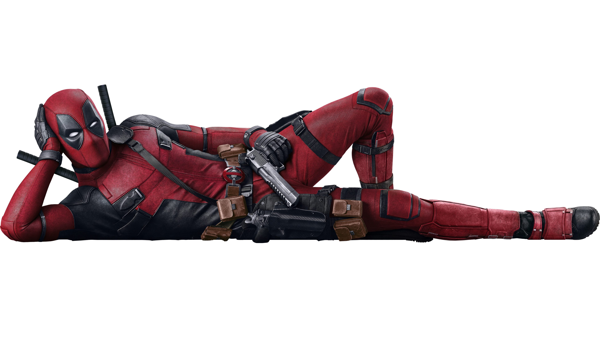

Who Am I? . . .

Wade's Tragic (and Sexy) Origins
Born as Wade Winston Wilson in Canada (eh!), I had a rough childhood filled with sarcasm, sass, and questionable life choices. Fast forward to me getting diagnosed with terminal cancer. Long story short, I agreed to some experimental treatments under shady circumstances, which gave me a healing factor, scarred my pretty face (tragic, I know), and turned me into the testical looking, wisecracking hero we all love today!
Becoming Deadpool (HOT!!)
After surviving a torturous experiment (they really weren’t great hosts), I became Deadpool a tigth red-suited, katana wielding, gun toting, world saving mercenary with a mouth. My healing powers mean I can't die trust me, I've tried and I’ve since made it my mission to save the world... or get paid. Depends on my mood, really. One thing’s for sure: I’m here to make things FUN. Fourth wall? What’s that?
Now I fight bad guys (sometimes the good guys, too), eat chimichangas, and occasionally stop by Xavier's School for Gifted Youngsters just to annoy Wolverine. It’s a fulfilling life.
BFFs (Or People Who Tolerate Me)
Despite what you may think, I’m a people person! Here are a few of the wonderful souls who *voluntarily* work with me:
- Weasel - My buddy who supplies me with weapons, gadgets, and jokes that are almost as good as mine.
- Blind Al - My sassy, blind roommate. She can't see my beautiful face, but she gets to hear my charming voice 24/7. Lucky her.
- Domino - The only person whose luck is better than mine. I mean, seriously, she makes everything look easy.
- Colossus - My big, shiny metal babysitter from the X-Men. He’s always trying to get me to be more "heroic"... *yawn*.
- Wolverine - My Canadian mate, besides the angry and hatred comment he says about me he really enjoys my company. So much he offered to help me save my timeline when I gracioussly wen to his on his OWN behave.
Powers and Perks (Because I'm Awesome)
- Regenerative Healing - I can heal from pretty much anything. Lose a hand? It'll grow back. Lose my head? Still here, baby.
- Expert Marksman - Guns, knives, swords you name it, I can use it. I may even hit the target once or twice.
- Fourth Wall Awareness - Yeah, I can talk to you. Bet you're reading this on a phone or computer right now, huh?
- Super Strength & Agility - While I’m no Hulk or Spidey, I’ve got some serious moves. Watch out, bad guys!
- Endless Supply of Quips - Sarcasm, jokes, insultsI’ve got them all, and I’m not afraid to use them.